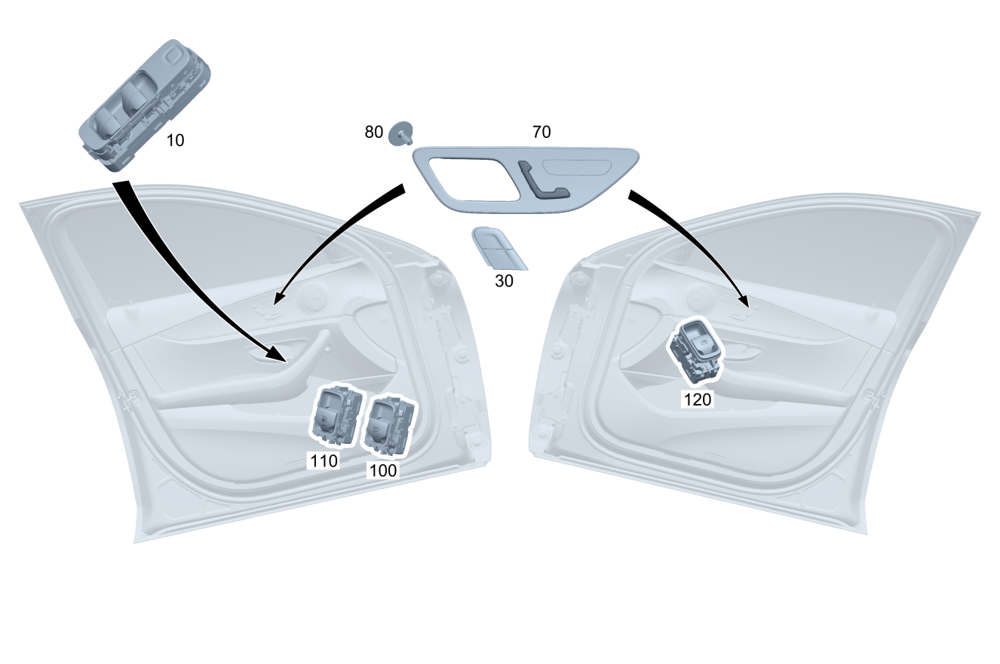

| № | Артикул | Название | Кол. | Примечание | Ограничение |
|---|---|---|---|---|---|
| 10 | A 206 900 51 11 | Блок управления | 1 | Блок выключателей стеклоподъемника на стороне водителя Рулевое управление: Влево [672] ДЕТАЛЬ ПОСЛЕ УСТАН.ПРОВЕРИТЬ НА АКТУАЛЬНОСТЬ "ПРОШИВНОГО" ПО | |
| 10 | A 206 900 83 15 | Блок управления (CONTROL UNIT) | 1 | Блок выключателей стеклоподъемника на стороне водителя Рулевое управление: Влево [672] ДЕТАЛЬ ПОСЛЕ УСТАН.ПРОВЕРИТЬ НА АКТУАЛЬНОСТЬ "ПРОШИВНОГО" ПО | |
| 10 | A 206 900 77 07 | Блок управления (CONTROL UNIT) | 1 | Блок выключателей стеклоподъемника на стороне водителя Рулевое управление: Влево [672] ДЕТАЛЬ ПОСЛЕ УСТАН.ПРОВЕРИТЬ НА АКТУАЛЬНОСТЬ "ПРОШИВНОГО" ПО | 500 |
| 10 | A 206 900 55 11 | Блок управления | 1 | Блок выключателей стеклоподъемника на стороне водителя Рулевое управление: Влево [672] ДЕТАЛЬ ПОСЛЕ УСТАН.ПРОВЕРИТЬ НА АКТУАЛЬНОСТЬ "ПРОШИВНОГО" ПО | 500 |
| 10 | A 206 900 87 15 | Блок управления (CONTROL UNIT) | 1 | Блок выключателей стеклоподъемника на стороне водителя Рулевое управление: Влево [672] ДЕТАЛЬ ПОСЛЕ УСТАН.ПРОВЕРИТЬ НА АКТУАЛЬНОСТЬ "ПРОШИВНОГО" ПО | 500 |
| 10 | A 206 900 75 07 | Блок управления (CONTROL UNIT) | 1 | Блок выключателей стеклоподъемника на стороне водителя Рулевое управление: Влево [672] ДЕТАЛЬ ПОСЛЕ УСТАН.ПРОВЕРИТЬ НА АКТУАЛЬНОСТЬ "ПРОШИВНОГО" ПО | 500+540 |
| 10 | A 206 900 53 11 | Блок управления | 1 | Блок выключателей стеклоподъемника на стороне водителя Рулевое управление: Влево [672] ДЕТАЛЬ ПОСЛЕ УСТАН.ПРОВЕРИТЬ НА АКТУАЛЬНОСТЬ "ПРОШИВНОГО" ПО | 500+540 |
| 10 | A 206 900 85 15 | Блок управления (CONTROL UNIT) | 1 | Блок выключателей стеклоподъемника на стороне водителя Рулевое управление: Влево [672] ДЕТАЛЬ ПОСЛЕ УСТАН.ПРОВЕРИТЬ НА АКТУАЛЬНОСТЬ "ПРОШИВНОГО" ПО | 500+540 |
| 10 | A 206 900 49 11 | Блок управления | 1 | Блок выключателей стеклоподъемника на стороне водителя Рулевое управление: Влево [672] ДЕТАЛЬ ПОСЛЕ УСТАН.ПРОВЕРИТЬ НА АКТУАЛЬНОСТЬ "ПРОШИВНОГО" ПО | 540 |
| 10 | A 206 900 81 15 | Блок управления (CONTROL UNIT) | 1 | Блок выключателей стеклоподъемника на стороне водителя Рулевое управление: Влево [672] ДЕТАЛЬ ПОСЛЕ УСТАН.ПРОВЕРИТЬ НА АКТУАЛЬНОСТЬ "ПРОШИВНОГО" ПО | 540 |
| 10 | A 206 900 50 11 | Блок управления | 1 | Блок выключателей стеклоподъемника на стороне водителя Рулевое управление: Влево [672] ДЕТАЛЬ ПОСЛЕ УСТАН.ПРОВЕРИТЬ НА АКТУАЛЬНОСТЬ "ПРОШИВНОГО" ПО | 540+(P14/P22/P29/P86/PTF) |
| 10 | A 206 900 82 15 | Блок управления (CONTROL UNIT) | 1 | Блок выключателей стеклоподъемника на стороне водителя Рулевое управление: Влево [672] ДЕТАЛЬ ПОСЛЕ УСТАН.ПРОВЕРИТЬ НА АКТУАЛЬНОСТЬ "ПРОШИВНОГО" ПО | 540+(P14/P22/P29/P86/PTF) |
| 10 | A 206 900 82 15 | Блок управления (CONTROL UNIT) | 1 | Блок выключателей стеклоподъемника на стороне водителя Рулевое управление: Влево [672] ДЕТАЛЬ ПОСЛЕ УСТАН.ПРОВЕРИТЬ НА АКТУАЛЬНОСТЬ "ПРОШИВНОГО" ПО | 540+(P14/P22/950/P29/P86/PTF) |
| 10 | A 206 900 74 07 | Блок управления (CONTROL UNIT) | 1 | Блок выключателей стеклоподъемника на стороне водителя Рулевое управление: Влево [672] ДЕТАЛЬ ПОСЛЕ УСТАН.ПРОВЕРИТЬ НА АКТУАЛЬНОСТЬ "ПРОШИВНОГО" ПО | P14/P22/P29/P86/PTF |
| 10 | A 206 900 52 11 | Блок управления | 1 | Блок выключателей стеклоподъемника на стороне водителя Рулевое управление: Влево [672] ДЕТАЛЬ ПОСЛЕ УСТАН.ПРОВЕРИТЬ НА АКТУАЛЬНОСТЬ "ПРОШИВНОГО" ПО | P14/P22/P29/P86/PTF |
| 10 | A 206 900 84 15 | Блок управления (CONTROL UNIT) | 1 | Блок выключателей стеклоподъемника на стороне водителя Рулевое управление: Влево [672] ДЕТАЛЬ ПОСЛЕ УСТАН.ПРОВЕРИТЬ НА АКТУАЛЬНОСТЬ "ПРОШИВНОГО" ПО | P14/P22/P29/P86/PTF |
| 10 | A 206 900 76 07 | Блок управления (CONTROL UNIT) | 1 | Блок выключателей стеклоподъемника на стороне водителя Рулевое управление: Влево [672] ДЕТАЛЬ ПОСЛЕ УСТАН.ПРОВЕРИТЬ НА АКТУАЛЬНОСТЬ "ПРОШИВНОГО" ПО | 500+540+(P14/P22/P29/P86/PTF) |
| 10 | A 206 900 54 11 | Блок управления (CONTROL UNIT) | 1 | Блок выключателей стеклоподъемника на стороне водителя Рулевое управление: Влево [672] ДЕТАЛЬ ПОСЛЕ УСТАН.ПРОВЕРИТЬ НА АКТУАЛЬНОСТЬ "ПРОШИВНОГО" ПО | 500+540+(P14/P22/P29/P86/PTF) |
| 10 | A 206 900 86 15 | Блок управления (CONTROL UNIT) | 1 | Блок выключателей стеклоподъемника на стороне водителя Рулевое управление: Влево [672] ДЕТАЛЬ ПОСЛЕ УСТАН.ПРОВЕРИТЬ НА АКТУАЛЬНОСТЬ "ПРОШИВНОГО" ПО | 500+540+(P14/P22/P29/P86/PTF) |
| 10 | A 206 900 86 15 | Блок управления (CONTROL UNIT) | 1 | Блок выключателей стеклоподъемника на стороне водителя Рулевое управление: Влево [672] ДЕТАЛЬ ПОСЛЕ УСТАН.ПРОВЕРИТЬ НА АКТУАЛЬНОСТЬ "ПРОШИВНОГО" ПО | 500+540+(P14/P22/950/P29/P86/PTF) |
| 10 | A 206 900 78 07 | Блок управления (CONTROL UNIT) | 1 | Блок выключателей стеклоподъемника на стороне водителя Рулевое управление: Влево [672] ДЕТАЛЬ ПОСЛЕ УСТАН.ПРОВЕРИТЬ НА АКТУАЛЬНОСТЬ "ПРОШИВНОГО" ПО | 500+(P14/P22/P29/P86/PTF) |
| 10 | A 206 900 56 11 | Блок управления (CONTROL UNIT) | 1 | Блок выключателей стеклоподъемника на стороне водителя Рулевое управление: Влево [672] ДЕТАЛЬ ПОСЛЕ УСТАН.ПРОВЕРИТЬ НА АКТУАЛЬНОСТЬ "ПРОШИВНОГО" ПО | 500+(P14/P22/P29/P86/PTF) |
| 10 | A 206 900 88 15 | Блок управления (CONTROL UNIT) | 1 | Блок выключателей стеклоподъемника на стороне водителя Рулевое управление: Влево [672] ДЕТАЛЬ ПОСЛЕ УСТАН.ПРОВЕРИТЬ НА АКТУАЛЬНОСТЬ "ПРОШИВНОГО" ПО | 500+(P14/P22/P29/P86/PTF) |
| 10 | A 206 900 88 15 | Блок управления (CONTROL UNIT) | 1 | Блок выключателей стеклоподъемника на стороне водителя Рулевое управление: Влево [672] ДЕТАЛЬ ПОСЛЕ УСТАН.ПРОВЕРИТЬ НА АКТУАЛЬНОСТЬ "ПРОШИВНОГО" ПО | 500+(P14/P22/950/P29/P86/PTF) |
| 10 | A 206 900 84 15 | Блок управления (CONTROL UNIT) | 1 | Блок выключателей стеклоподъемника на стороне водителя Рулевое управление: Влево [672] ДЕТАЛЬ ПОСЛЕ УСТАН.ПРОВЕРИТЬ НА АКТУАЛЬНОСТЬ "ПРОШИВНОГО" ПО | P14/P22/950/P29/P86/PTF |
| 10 | A 206 900 51 11 | Блок управления | 1 | Блок выключателей стеклоподъемника на стороне водителя Рулевое управление: Вправо [672] ДЕТАЛЬ ПОСЛЕ УСТАН.ПРОВЕРИТЬ НА АКТУАЛЬНОСТЬ "ПРОШИВНОГО" ПО | |
| 10 | A 206 900 83 15 | Блок управления (CONTROL UNIT) | 1 | Блок выключателей стеклоподъемника на стороне водителя Рулевое управление: Вправо [672] ДЕТАЛЬ ПОСЛЕ УСТАН.ПРОВЕРИТЬ НА АКТУАЛЬНОСТЬ "ПРОШИВНОГО" ПО | |
| 10 | A 206 900 77 07 | Блок управления (CONTROL UNIT) | 1 | Блок выключателей стеклоподъемника на стороне водителя Рулевое управление: Вправо [672] ДЕТАЛЬ ПОСЛЕ УСТАН.ПРОВЕРИТЬ НА АКТУАЛЬНОСТЬ "ПРОШИВНОГО" ПО | 500 |
| 10 | A 206 900 55 11 | Блок управления | 1 | Блок выключателей стеклоподъемника на стороне водителя Рулевое управление: Вправо [672] ДЕТАЛЬ ПОСЛЕ УСТАН.ПРОВЕРИТЬ НА АКТУАЛЬНОСТЬ "ПРОШИВНОГО" ПО | 500 |
| 10 | A 206 900 87 15 | Блок управления (CONTROL UNIT) | 1 | Блок выключателей стеклоподъемника на стороне водителя Рулевое управление: Вправо [672] ДЕТАЛЬ ПОСЛЕ УСТАН.ПРОВЕРИТЬ НА АКТУАЛЬНОСТЬ "ПРОШИВНОГО" ПО | 500 |
| 10 | A 206 900 75 07 | Блок управления (CONTROL UNIT) | 1 | Блок выключателей стеклоподъемника на стороне водителя Рулевое управление: Вправо [672] ДЕТАЛЬ ПОСЛЕ УСТАН.ПРОВЕРИТЬ НА АКТУАЛЬНОСТЬ "ПРОШИВНОГО" ПО | 500+540 |
| 10 | A 206 900 53 11 | Блок управления | 1 | Блок выключателей стеклоподъемника на стороне водителя Рулевое управление: Вправо [672] ДЕТАЛЬ ПОСЛЕ УСТАН.ПРОВЕРИТЬ НА АКТУАЛЬНОСТЬ "ПРОШИВНОГО" ПО | 500+540 |
| 10 | A 206 900 85 15 | Блок управления (CONTROL UNIT) | 1 | Блок выключателей стеклоподъемника на стороне водителя Рулевое управление: Вправо [672] ДЕТАЛЬ ПОСЛЕ УСТАН.ПРОВЕРИТЬ НА АКТУАЛЬНОСТЬ "ПРОШИВНОГО" ПО | 500+540 |
| 10 | A 206 900 49 11 | Блок управления | 1 | Блок выключателей стеклоподъемника на стороне водителя Рулевое управление: Вправо [672] ДЕТАЛЬ ПОСЛЕ УСТАН.ПРОВЕРИТЬ НА АКТУАЛЬНОСТЬ "ПРОШИВНОГО" ПО | 540 |
| 10 | A 206 900 81 15 | Блок управления (CONTROL UNIT) | 1 | Блок выключателей стеклоподъемника на стороне водителя Рулевое управление: Вправо [672] ДЕТАЛЬ ПОСЛЕ УСТАН.ПРОВЕРИТЬ НА АКТУАЛЬНОСТЬ "ПРОШИВНОГО" ПО | 540 |
| 10 | A 206 900 50 11 | Блок управления | 1 | Блок выключателей стеклоподъемника на стороне водителя Рулевое управление: Вправо [672] ДЕТАЛЬ ПОСЛЕ УСТАН.ПРОВЕРИТЬ НА АКТУАЛЬНОСТЬ "ПРОШИВНОГО" ПО | 540+(P14/P22/P29/P86/PTF) |
| 10 | A 206 900 82 15 | Блок управления (CONTROL UNIT) | 1 | Блок выключателей стеклоподъемника на стороне водителя Рулевое управление: Вправо [672] ДЕТАЛЬ ПОСЛЕ УСТАН.ПРОВЕРИТЬ НА АКТУАЛЬНОСТЬ "ПРОШИВНОГО" ПО | 540+(P14/P22/P29/P86/PTF) |
| 10 | A 206 900 82 15 | Блок управления (CONTROL UNIT) | 1 | Блок выключателей стеклоподъемника на стороне водителя Рулевое управление: Вправо [672] ДЕТАЛЬ ПОСЛЕ УСТАН.ПРОВЕРИТЬ НА АКТУАЛЬНОСТЬ "ПРОШИВНОГО" ПО | 540+(P14/P22/950/P29/P86/PTF) |
| 10 | A 206 900 74 07 | Блок управления (CONTROL UNIT) | 1 | Блок выключателей стеклоподъемника на стороне водителя Рулевое управление: Вправо [672] ДЕТАЛЬ ПОСЛЕ УСТАН.ПРОВЕРИТЬ НА АКТУАЛЬНОСТЬ "ПРОШИВНОГО" ПО | P14/P22/P29/P86/PTF |
| 10 | A 206 900 52 11 | Блок управления | 1 | Блок выключателей стеклоподъемника на стороне водителя Рулевое управление: Вправо [672] ДЕТАЛЬ ПОСЛЕ УСТАН.ПРОВЕРИТЬ НА АКТУАЛЬНОСТЬ "ПРОШИВНОГО" ПО | P14/P22/P29/P86/PTF |
| 10 | A 206 900 84 15 | Блок управления (CONTROL UNIT) | 1 | Блок выключателей стеклоподъемника на стороне водителя Рулевое управление: Вправо [672] ДЕТАЛЬ ПОСЛЕ УСТАН.ПРОВЕРИТЬ НА АКТУАЛЬНОСТЬ "ПРОШИВНОГО" ПО | P14/P22/P29/P86/PTF |
| 10 | A 206 900 76 07 | Блок управления (CONTROL UNIT) | 1 | Блок выключателей стеклоподъемника на стороне водителя Рулевое управление: Вправо [672] ДЕТАЛЬ ПОСЛЕ УСТАН.ПРОВЕРИТЬ НА АКТУАЛЬНОСТЬ "ПРОШИВНОГО" ПО | 500+540+(P14/P22/P29/P86/PTF) |
| 10 | A 206 900 54 11 | Блок управления (CONTROL UNIT) | 1 | Блок выключателей стеклоподъемника на стороне водителя Рулевое управление: Вправо [672] ДЕТАЛЬ ПОСЛЕ УСТАН.ПРОВЕРИТЬ НА АКТУАЛЬНОСТЬ "ПРОШИВНОГО" ПО | 500+540+(P14/P22/P29/P86/PTF) |
| 10 | A 206 900 86 15 | Блок управления (CONTROL UNIT) | 1 | Блок выключателей стеклоподъемника на стороне водителя Рулевое управление: Вправо [672] ДЕТАЛЬ ПОСЛЕ УСТАН.ПРОВЕРИТЬ НА АКТУАЛЬНОСТЬ "ПРОШИВНОГО" ПО | 500+540+(P14/P22/P29/P86/PTF) |
| 10 | A 206 900 86 15 | Блок управления (CONTROL UNIT) | 1 | Блок выключателей стеклоподъемника на стороне водителя Рулевое управление: Вправо [672] ДЕТАЛЬ ПОСЛЕ УСТАН.ПРОВЕРИТЬ НА АКТУАЛЬНОСТЬ "ПРОШИВНОГО" ПО | 500+540+(P14/P22/950/P29/P86/PTF) |
| 10 | A 206 900 78 07 | Блок управления (CONTROL UNIT) | 1 | Блок выключателей стеклоподъемника на стороне водителя Рулевое управление: Вправо [672] ДЕТАЛЬ ПОСЛЕ УСТАН.ПРОВЕРИТЬ НА АКТУАЛЬНОСТЬ "ПРОШИВНОГО" ПО | 500+(P14/P22/P29/P86/PTF) |
| 10 | A 206 900 56 11 | Блок управления (CONTROL UNIT) | 1 | Блок выключателей стеклоподъемника на стороне водителя Рулевое управление: Вправо [672] ДЕТАЛЬ ПОСЛЕ УСТАН.ПРОВЕРИТЬ НА АКТУАЛЬНОСТЬ "ПРОШИВНОГО" ПО | 500+(P14/P22/P29/P86/PTF) |
| 10 | A 206 900 88 15 | Блок управления (CONTROL UNIT) | 1 | Блок выключателей стеклоподъемника на стороне водителя Рулевое управление: Вправо [672] ДЕТАЛЬ ПОСЛЕ УСТАН.ПРОВЕРИТЬ НА АКТУАЛЬНОСТЬ "ПРОШИВНОГО" ПО | 500+(P14/P22/P29/P86/PTF) |
| 10 | A 206 900 84 15 | Блок управления (CONTROL UNIT) | 1 | Блок выключателей стеклоподъемника на стороне водителя Рулевое управление: Вправо [672] ДЕТАЛЬ ПОСЛЕ УСТАН.ПРОВЕРИТЬ НА АКТУАЛЬНОСТЬ "ПРОШИВНОГО" ПО | P14/P22/950/P29/P86/PTF |
| 10 | A 206 900 88 15 | Блок управления (CONTROL UNIT) | 1 | Блок выключателей стеклоподъемника на стороне водителя Рулевое управление: Вправо [672] ДЕТАЛЬ ПОСЛЕ УСТАН.ПРОВЕРИТЬ НА АКТУАЛЬНОСТЬ "ПРОШИВНОГО" ПО | 500+(P14/P22/950/P29/P86/PTF) |
| 30 | A 206 905 02 02 | Блок выключателей (SWITCH BLOCK) | 1 | Система центральной блокировки замков; дверь спереди слева Рулевое управление: Влево | |
| 30 | A 206 905 02 02 | Блок выключателей (SWITCH BLOCK) | 1 | Система центральной блокировки замков; дверь спереди слева | 460/494 |
| 30 | A 206 905 03 02 | Блок выключателей (SWITCH BLOCK) | 1 | Механизм центральной блокировки замка передней правой двери Рулевое управление: Вправо | |
| 30 | A 206 905 03 02 | Блок выключателей (SWITCH BLOCK) | 1 | Механизм центральной блокировки замка передней правой двери | 460/494 |
| 70 | A 206 900 41 08 | Блок управления (CONTROL UNIT) | 1 | Блок выключателей, дверь спереди слева [672] ДЕТАЛЬ ПОСЛЕ УСТАН.ПРОВЕРИТЬ НА АКТУАЛЬНОСТЬ "ПРОШИВНОГО" ПО | 891+221 |
| 70 | A 206 900 96 18 | Блок управления (CONTROL UNIT) | 1 | Блок выключателей, дверь спереди слева [672] ДЕТАЛЬ ПОСЛЕ УСТАН.ПРОВЕРИТЬ НА АКТУАЛЬНОСТЬ "ПРОШИВНОГО" ПО | 891+221 |
| 70 | A 206 900 43 08 | Блок управления (CONTROL UNIT) | 1 | Блок выключателей, дверь спереди слева [672] ДЕТАЛЬ ПОСЛЕ УСТАН.ПРОВЕРИТЬ НА АКТУАЛЬНОСТЬ "ПРОШИВНОГО" ПО | 891+221+873 |
| 70 | A 206 900 98 18 | Блок управления (CONTROL UNIT) | 1 | Блок выключателей, дверь спереди слева [672] ДЕТАЛЬ ПОСЛЕ УСТАН.ПРОВЕРИТЬ НА АКТУАЛЬНОСТЬ "ПРОШИВНОГО" ПО | 891+221+873 |
| 70 | A 206 900 45 08 | Блок управления (CONTROL UNIT) | 1 | Блок выключателей, дверь спереди слева [672] ДЕТАЛЬ ПОСЛЕ УСТАН.ПРОВЕРИТЬ НА АКТУАЛЬНОСТЬ "ПРОШИВНОГО" ПО | 891+221+401 |
| 70 | A 206 900 00 19 | Блок управления | 1 | Блок выключателей, дверь спереди слева [672] ДЕТАЛЬ ПОСЛЕ УСТАН.ПРОВЕРИТЬ НА АКТУАЛЬНОСТЬ "ПРОШИВНОГО" ПО | 891+221+401 |
| 70 | A 206 900 47 08 | Блок управления (CONTROL UNIT) | 1 | Блок выключателей, дверь спереди слева [672] ДЕТАЛЬ ПОСЛЕ УСТАН.ПРОВЕРИТЬ НА АКТУАЛЬНОСТЬ "ПРОШИВНОГО" ПО | 891+241 |
| 70 | A 206 900 02 19 | Блок управления (CONTROL UNIT) | 1 | Блок выключателей, дверь спереди слева [672] ДЕТАЛЬ ПОСЛЕ УСТАН.ПРОВЕРИТЬ НА АКТУАЛЬНОСТЬ "ПРОШИВНОГО" ПО | 891+241 |
| 70 | A 206 900 49 08 | Блок управления (CONTROL UNIT) | 1 | Блок выключателей, дверь спереди слева [672] ДЕТАЛЬ ПОСЛЕ УСТАН.ПРОВЕРИТЬ НА АКТУАЛЬНОСТЬ "ПРОШИВНОГО" ПО | 891+241+873 |
| 70 | A 206 900 04 19 | Блок управления (CONTROL UNIT) | 1 | Блок выключателей, дверь спереди слева [672] ДЕТАЛЬ ПОСЛЕ УСТАН.ПРОВЕРИТЬ НА АКТУАЛЬНОСТЬ "ПРОШИВНОГО" ПО | 891+241+873 |
| 70 | A 206 900 51 22 | Блок управления (CONTROL UNIT) | 1 | Блок выключателей, дверь спереди слева [672] ДЕТАЛЬ ПОСЛЕ УСТАН.ПРОВЕРИТЬ НА АКТУАЛЬНОСТЬ "ПРОШИВНОГО" ПО | 891+241+873 |
| 70 | A 206 900 51 08 | Блок управления (CONTROL UNIT) | 1 | Блок выключателей, дверь спереди слева [672] ДЕТАЛЬ ПОСЛЕ УСТАН.ПРОВЕРИТЬ НА АКТУАЛЬНОСТЬ "ПРОШИВНОГО" ПО | 891+241+401 |
| 70 | A 206 900 06 19 | Блок управления (CONTROL UNIT) | 1 | Блок выключателей, дверь спереди слева [672] ДЕТАЛЬ ПОСЛЕ УСТАН.ПРОВЕРИТЬ НА АКТУАЛЬНОСТЬ "ПРОШИВНОГО" ПО | 891+241+401 |
| 70 | A 206 900 52 22 | Блок управления (CONTROL UNIT) | 1 | Блок выключателей, дверь спереди слева [672] ДЕТАЛЬ ПОСЛЕ УСТАН.ПРОВЕРИТЬ НА АКТУАЛЬНОСТЬ "ПРОШИВНОГО" ПО | 891+241+401 |
| 70 | A 206 900 54 08 | Блок управления (CONTROL UNIT) | 1 | Блок выключателей, дверь спереди слева [672] ДЕТАЛЬ ПОСЛЕ УСТАН.ПРОВЕРИТЬ НА АКТУАЛЬНОСТЬ "ПРОШИВНОГО" ПО | 891+873 |
| 70 | A 206 900 03 23 | Блок управления (CONTROL UNIT) | 1 | Блок выключателей, дверь спереди слева [672] ДЕТАЛЬ ПОСЛЕ УСТАН.ПРОВЕРИТЬ НА АКТУАЛЬНОСТЬ "ПРОШИВНОГО" ПО | 891+873 |
| 70 | A 206 900 58 08 | Блок управления (CONTROL UNIT) | 1 | Блок выключателей, дверь спереди слева [672] ДЕТАЛЬ ПОСЛЕ УСТАН.ПРОВЕРИТЬ НА АКТУАЛЬНОСТЬ "ПРОШИВНОГО" ПО | 891+401 |
| 70 | A 206 900 08 19 | Блок управления | 1 | Блок выключателей, дверь спереди слева [672] ДЕТАЛЬ ПОСЛЕ УСТАН.ПРОВЕРИТЬ НА АКТУАЛЬНОСТЬ "ПРОШИВНОГО" ПО | 891+401 |
| 70 | A 206 900 53 22 | Блок управления | 1 | Блок выключателей, дверь спереди слева [672] ДЕТАЛЬ ПОСЛЕ УСТАН.ПРОВЕРИТЬ НА АКТУАЛЬНОСТЬ "ПРОШИВНОГО" ПО | 891+401 |
| 70 | A 206 680 03 05 | Декоративная накладка (COVER TRIM) | 1 | Блок выключателей, дверь спереди слева | 891 |
| 70 | A 206 900 52 08 | Блок управления (CONTROL UNIT) | 1 | Блок выключателей, дверь спереди слева [672] ДЕТАЛЬ ПОСЛЕ УСТАН.ПРОВЕРИТЬ НА АКТУАЛЬНОСТЬ "ПРОШИВНОГО" ПО | P75+873 |
| 70 | A 206 900 53 08 | Блок управления | 1 | Блок выключателей, дверь спереди слева [672] ДЕТАЛЬ ПОСЛЕ УСТАН.ПРОВЕРИТЬ НА АКТУАЛЬНОСТЬ "ПРОШИВНОГО" ПО | P75+873+810 |
| 70 | A 206 680 01 05 | Декоративная накладка (COVER TRIM) | 1 | Блок выключателей, дверь спереди слева | P75 |
| 70 | A 206 680 02 05 | Декоративная накладка (COVER TRIM) | 1 | Блок выключателей, дверь спереди слева | P75+810 |
| 70 | A 206 900 60 08 | Блок управления (CONTROL UNIT) | 1 | Блок выключателей (передняя правая дверь) [672] ДЕТАЛЬ ПОСЛЕ УСТАН.ПРОВЕРИТЬ НА АКТУАЛЬНОСТЬ "ПРОШИВНОГО" ПО | 891+222 |
| 70 | A 206 900 10 19 | Блок управления (CONTROL UNIT) | 1 | Блок выключателей (передняя правая дверь) [672] ДЕТАЛЬ ПОСЛЕ УСТАН.ПРОВЕРИТЬ НА АКТУАЛЬНОСТЬ "ПРОШИВНОГО" ПО | 891+222 |
| 70 | A 206 900 62 08 | Блок управления (CONTROL UNIT) | 1 | Блок выключателей (передняя правая дверь) [672] ДЕТАЛЬ ПОСЛЕ УСТАН.ПРОВЕРИТЬ НА АКТУАЛЬНОСТЬ "ПРОШИВНОГО" ПО | 891+222+873 |
| 70 | A 206 900 12 19 | Блок управления (CONTROL UNIT) | 1 | Блок выключателей (передняя правая дверь) [672] ДЕТАЛЬ ПОСЛЕ УСТАН.ПРОВЕРИТЬ НА АКТУАЛЬНОСТЬ "ПРОШИВНОГО" ПО | 891+222+873 |
| 70 | A 206 900 64 08 | Блок управления (CONTROL UNIT) | 1 | Блок выключателей (передняя правая дверь) [672] ДЕТАЛЬ ПОСЛЕ УСТАН.ПРОВЕРИТЬ НА АКТУАЛЬНОСТЬ "ПРОШИВНОГО" ПО | 891+222+401 |
| 70 | A 206 900 14 19 | Блок управления (CONTROL UNIT) | 1 | Блок выключателей (передняя правая дверь) [672] ДЕТАЛЬ ПОСЛЕ УСТАН.ПРОВЕРИТЬ НА АКТУАЛЬНОСТЬ "ПРОШИВНОГО" ПО | 891+222+401 |
| 70 | A 206 900 66 08 | Блок управления (CONTROL UNIT) | 1 | Блок выключателей (передняя правая дверь) [672] ДЕТАЛЬ ПОСЛЕ УСТАН.ПРОВЕРИТЬ НА АКТУАЛЬНОСТЬ "ПРОШИВНОГО" ПО | 891+242 |
| 70 | A 206 900 16 19 | Блок управления (CONTROL UNIT) | 1 | Блок выключателей (передняя правая дверь) [672] ДЕТАЛЬ ПОСЛЕ УСТАН.ПРОВЕРИТЬ НА АКТУАЛЬНОСТЬ "ПРОШИВНОГО" ПО | 891+242 |
| 70 | A 206 900 68 08 | Блок управления (CONTROL UNIT) | 1 | Блок выключателей (передняя правая дверь) [672] ДЕТАЛЬ ПОСЛЕ УСТАН.ПРОВЕРИТЬ НА АКТУАЛЬНОСТЬ "ПРОШИВНОГО" ПО | 891+242+873 |
| 70 | A 206 900 18 19 | Блок управления (CONTROL UNIT) | 1 | Блок выключателей (передняя правая дверь) [672] ДЕТАЛЬ ПОСЛЕ УСТАН.ПРОВЕРИТЬ НА АКТУАЛЬНОСТЬ "ПРОШИВНОГО" ПО | 891+242+873 |
| 70 | A 206 900 58 22 | Блок управления (CONTROL UNIT) | 1 | Блок выключателей (передняя правая дверь) [672] ДЕТАЛЬ ПОСЛЕ УСТАН.ПРОВЕРИТЬ НА АКТУАЛЬНОСТЬ "ПРОШИВНОГО" ПО | 891+242+873 |
| 70 | A 206 900 70 08 | Блок управления (CONTROL UNIT) | 1 | Блок выключателей (передняя правая дверь) [672] ДЕТАЛЬ ПОСЛЕ УСТАН.ПРОВЕРИТЬ НА АКТУАЛЬНОСТЬ "ПРОШИВНОГО" ПО | 891+242+401 |
| 70 | A 206 900 20 19 | Блок управления (CONTROL UNIT) | 1 | Блок выключателей (передняя правая дверь) [672] ДЕТАЛЬ ПОСЛЕ УСТАН.ПРОВЕРИТЬ НА АКТУАЛЬНОСТЬ "ПРОШИВНОГО" ПО | 891+242+401 |
| 70 | A 206 900 59 22 | Блок управления (CONTROL UNIT) | 1 | Блок выключателей (передняя правая дверь) [672] ДЕТАЛЬ ПОСЛЕ УСТАН.ПРОВЕРИТЬ НА АКТУАЛЬНОСТЬ "ПРОШИВНОГО" ПО | 891+242+401 |
| 70 | A 206 900 73 08 | Блок управления (CONTROL UNIT) | 1 | Блок выключателей (передняя правая дверь) [672] ДЕТАЛЬ ПОСЛЕ УСТАН.ПРОВЕРИТЬ НА АКТУАЛЬНОСТЬ "ПРОШИВНОГО" ПО | 891+873 |
| 70 | A 206 900 05 23 | Блок управления (CONTROL UNIT) | 1 | Блок выключателей (передняя правая дверь) [672] ДЕТАЛЬ ПОСЛЕ УСТАН.ПРОВЕРИТЬ НА АКТУАЛЬНОСТЬ "ПРОШИВНОГО" ПО | 891+873 |
| 70 | A 206 900 77 08 | Блок управления (CONTROL UNIT) | 1 | Блок выключателей (передняя правая дверь) [672] ДЕТАЛЬ ПОСЛЕ УСТАН.ПРОВЕРИТЬ НА АКТУАЛЬНОСТЬ "ПРОШИВНОГО" ПО | 891+401 |
| 70 | A 206 900 22 19 | Блок управления (CONTROL UNIT) | 1 | Блок выключателей (передняя правая дверь) [672] ДЕТАЛЬ ПОСЛЕ УСТАН.ПРОВЕРИТЬ НА АКТУАЛЬНОСТЬ "ПРОШИВНОГО" ПО | 891+401 |
| 70 | A 206 900 60 22 | Блок управления | 1 | Блок выключателей (передняя правая дверь) [672] ДЕТАЛЬ ПОСЛЕ УСТАН.ПРОВЕРИТЬ НА АКТУАЛЬНОСТЬ "ПРОШИВНОГО" ПО | 891+401 |
| 70 | A 206 680 08 05 | Декоративная накладка (COVER TRIM) | 1 | Блок выключателей (передняя правая дверь) | 891 |
| 70 | A 206 900 71 08 | Блок управления (CONTROL UNIT) | 1 | Блок выключателей (передняя правая дверь) [672] ДЕТАЛЬ ПОСЛЕ УСТАН.ПРОВЕРИТЬ НА АКТУАЛЬНОСТЬ "ПРОШИВНОГО" ПО | P75+873 |
| 70 | A 206 900 72 08 | Блок управления | 1 | Блок выключателей (передняя правая дверь) [672] ДЕТАЛЬ ПОСЛЕ УСТАН.ПРОВЕРИТЬ НА АКТУАЛЬНОСТЬ "ПРОШИВНОГО" ПО | P75+873+810 |
| 70 | A 206 680 06 05 | Декоративная накладка (COVER TRIM) | 1 | Блок выключателей (передняя правая дверь) | P75 |
| 70 | A 206 680 07 05 | Декоративная накладка (COVER TRIM) | 1 | Блок выключателей (передняя правая дверь) | P75+810 |
| 80 | A 005 990 82 12 | Винт Torx с полукруглой (PAN HEAD SCREW) | 6 | Крепление выключателя, дверь слева | |
| 80 | A 000 990 47 38 | Винт со полукругл.головой (PAN HEAD SCREW W COLLAR) | 6 | Крепление выключателя, дверь слева; 4X12 | |
| 80 | A 000 990 47 38 | Винт со полукругл.головой (PAN HEAD SCREW W COLLAR) | 6 | Крепление выключателя, дверь слева; 4X12 | |
| 80 | A 000 990 47 38 | Винт со полукругл.головой (PAN HEAD SCREW W COLLAR) | 6 | Крепление выключателя, дверь слева; 4X12 | |
| 80 | A 005 990 82 12 | Винт Torx с полукруглой (PAN HEAD SCREW) | 6 | Крепление выключателя, дверь справа | |
| 80 | A 000 990 47 38 | Винт со полукругл.головой (PAN HEAD SCREW W COLLAR) | 6 | Крепление выключателя, дверь справа; 4X12 | |
| 80 | A 000 990 47 38 | Винт со полукругл.головой (PAN HEAD SCREW W COLLAR) | 6 | Крепление выключателя, дверь справа; 4X12 | |
| 80 | A 000 990 47 38 | Винт со полукругл.головой (PAN HEAD SCREW W COLLAR) | 6 | Крепление выключателя, дверь справа; 4X12 | |
| 100 | A 206 905 43 00 | Блок выключателей (SWITCH BLOCK) | 1 | Дистанционная разблокировка крышки багажника Рулевое управление: Влево | |
| 100 | A 206 905 44 00 | Блок выключателей (SWITCH BLOCK) | 1 | Дистанционное закрывание крышки багажника Рулевое управление: Влево | 890/881 |
| 100 | A 206 905 67 02 | Блок выключателей (SWITCH BLOCK) | 1 | Дистанционная разблокировка крышки багажника Рулевое управление: Влево | P14/P22/P29/P86/PTF |
| 100 | A 206 905 67 02 | Блок выключателей (SWITCH BLOCK) | 1 | Дистанционная разблокировка крышки багажника Рулевое управление: Влево | P14/P22/950/P29/P86/PTF |
| 100 | A 206 905 68 02 | Блок выключателей (SWITCH BLOCK) | 1 | Дистанционное закрывание крышки багажника Рулевое управление: Влево | (890/881)+(P14/P22/P29/P86/PTF) |
| 100 | A 206 905 68 02 | Блок выключателей (SWITCH BLOCK) | 1 | Дистанционное закрывание крышки багажника Рулевое управление: Влево | (890/881)+(P14/P22/950/P29/P86/PTF) |
| 100 | A 206 905 43 00 | Блок выключателей (SWITCH BLOCK) | 1 | Дистанционная разблокировка крышки багажника Рулевое управление: Вправо | |
| 100 | A 206 905 44 00 | Блок выключателей (SWITCH BLOCK) | 1 | Дистанционное закрывание крышки багажника Рулевое управление: Вправо | 890/881 |
| 100 | A 206 905 67 02 | Блок выключателей (SWITCH BLOCK) | 1 | Дистанционная разблокировка крышки багажника Рулевое управление: Вправо | P14/P22/P29/P86/PTF |
| 100 | A 206 905 68 02 | Блок выключателей (SWITCH BLOCK) | 1 | Дистанционное закрывание крышки багажника Рулевое управление: Вправо | (890/881)+(P14/P22/P29/P86/PTF) |
| 100 | A 206 905 67 02 | Блок выключателей (SWITCH BLOCK) | 1 | Дистанционная разблокировка крышки багажника Рулевое управление: Вправо | P14/P22/950/P29/P86/PTF |
| 100 | A 206 905 68 02 | Блок выключателей (SWITCH BLOCK) | 1 | Дистанционное закрывание крышки багажника Рулевое управление: Вправо | (890/881)+(P14/P22/950/P29/P86/PTF) |
| 110 | A 206 905 69 02 | Блок выключателей (SWITCH BLOCK) | 1 | Выключатель распознавания заправки Рулевое управление: Влево | 2U2+(P14/P22/P29/P86/PTF) |
| 110 | A 206 905 69 02 | Блок выключателей (SWITCH BLOCK) | 1 | Выключатель распознавания заправки Рулевое управление: Влево | 2U2+(P14/P22/950/P29/P86/PTF) |
| 110 | A 206 905 69 02 | Блок выключателей (SWITCH BLOCK) | 1 | Выключатель распознавания заправки Рулевое управление: Вправо | 2U2+(P14/P22/P29/P86/PTF) |
| 110 | A 206 905 69 02 | Блок выключателей (SWITCH BLOCK) | 1 | Выключатель распознавания заправки Рулевое управление: Вправо | 2U2+(P14/P22/950/P29/P86/PTF) |
| 120 | A 206 905 42 00 | Блок выключателей (SWITCH BLOCK) | 1 | Выключатель электростеклоподъемника на стороне переднего пассажира спереди Рулевое управление: Вправо | |
| 120 | A 223 905 19 03 | Блок выключателей (SWITCH BLOCK) | 1 | Выключатель электростеклоподъемника на стороне переднего пассажира спереди Рулевое управление: Вправо | P14/P22/P29/P86/PTF |
| 120 | A 223 905 19 03 | Блок выключателей (SWITCH BLOCK) | 1 | Выключатель электростеклоподъемника на стороне переднего пассажира спереди Рулевое управление: Вправо | P14/P22/950/P29/P86/PTF |
| 120 | A 206 905 42 00 | Блок выключателей (SWITCH BLOCK) | 1 | Выключатель электростеклоподъемника на стороне переднего пассажира спереди Рулевое управление: Влево | |
| 120 | A 223 905 19 03 | Блок выключателей (SWITCH BLOCK) | 1 | Выключатель электростеклоподъемника на стороне переднего пассажира спереди Рулевое управление: Влево | P14/P22/P29/P86/PTF |
| 120 | A 223 905 19 03 | Блок выключателей (SWITCH BLOCK) | 1 | Выключатель электростеклоподъемника на стороне переднего пассажира спереди Рулевое управление: Влево | P14/P22/950/P29/P86/PTF |
Позиций: 132 · подписано на схемах: 132 · колесо — плавный зум в курсор, перетаскивание — пан, двойной клик — зум, клик по артикулу — скопировать.